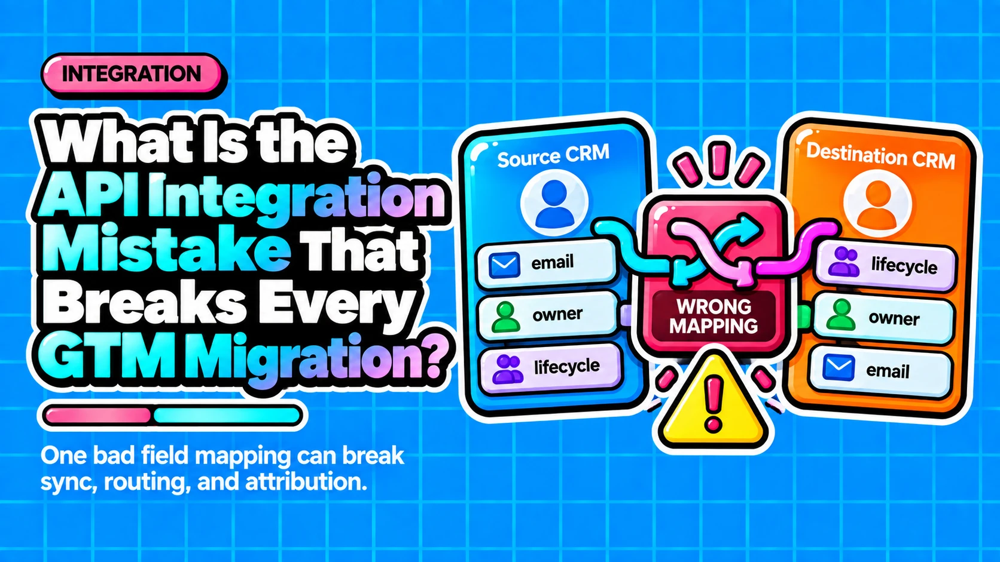

What Is the API Integration Mistake That Breaks Every GTM Migration?

Direct answer: The API integration mistake that breaks every GTM migration is wiring systems directly to each other without an abstraction layer. Point-to-point connections create tight coupling, so replacing any single tool forces every integration to be refactored. The fix is architectural: use abstraction layers, externalize credentials, and treat integrations as versioned products.
- Point-to-point API integrations create vendor lock-in at the integration layer, not just the tool level.
- Swapping a CRM does not trigger one migration, it triggers as many migrations as there are direct integrations pointing at it.
- Hardcoding API keys and endpoint URLs turns a minor shortcut into a migration minefield when credentials rotate or environments change.
- Abstraction layers such as an API gateway, an iPaaS, or an orchestration service let individual tools be swapped without touching every downstream consumer.
- Most failed GTM stack migrations trace back to a missing abstraction layer, not a missing test plan.
Questions this article answers
- Why do GTM and RevOps migrations keep failing even after thorough testing?
- Why do engineering teams default to point-to-point integrations in the first place?
- What hidden assumption makes point-to-point integration design even more dangerous?
- What is the architectural fix for integrations that break during migrations?
- Plus 6 FAQs answered below
Why do GTM and RevOps migrations keep failing even after thorough testing?
Thorough testing cannot rescue an architecture that was designed to resist change. The failure is caused by tightly coupled, point-to-point integrations that were chosen long before the migration began.
When a GTM or RevOps migration goes sideways, post-mortems typically blame messy data mapping, a compressed timeline, or skipped end-to-end testing. Those are real problems, but they are symptoms.
The actual cause was decided the moment someone wired System A directly to System B without an abstraction layer in between. Point-to-point API integration forms tightly coupled connections between components, which means that replacing any single tool requires every connector to be refactored. Swapping your CRM does not trigger one migration, it triggers as many migrations as there are direct integrations pointing at it.
No amount of testing can fix an architecture that was built to break under change.
Why do engineering teams default to point-to-point integrations in the first place?
Point-to-point integrations are fast to ship, easy to reason about at small scale, and require no middleware investment, making them the instinctive choice for teams optimizing for short-term delivery.
The short-term case for point-to-point is obvious. A developer familiar with both systems can stand up a CRM-to-email sync in a week, with no middleware cost and straightforward logic to review.
The long-term case collapses quickly:
- Tight coupling and custom code make every system replacement expensive and disruptive.
- Vendor lock-in gets baked into the integration layer itself, not just the tool contract.
- In a GTM stack that has grown organically across CRM, sales engagement, enrichment, marketing automation, and attribution, the number of integrations that must be updated when one system changes can number in the dozens.
A further compounding factor is the habit of hardcoding API keys and endpoint URLs. What feels like a harmless time-saver during prototyping becomes a migration minefield when teams need to rotate credentials or redirect traffic to a new environment. Teams that did not externalize configuration as first-class infrastructure find themselves doing archaeology at exactly the moment they can least afford it.
What hidden assumption makes point-to-point integration design even more dangerous?
The dangerous assumption is that a connection is simply 'A sends data to B.' Real integrations involve timing, data structure, dependencies, and failure conditions that all require explicit handling.
Tools like Zapier or Make reinforce the illusion that integrations are linear flows. In practice, they are conditional systems with branching logic that accumulates edge cases over time.
When that logic is buried inside dozens of point-to-point pipes, none of it is visible or portable. A migration does not just move data. It has to reconstruct an undocumented set of conditional behaviors that lived only inside the old connection.
This is why migrations that looked straightforward on a data-mapping spreadsheet collapse in production: the spreadsheet captured fields, not logic.
What is the architectural fix for integrations that break during migrations?
The fix is designing integrations that are decoupled by default, using abstraction layers so individual tools can be swapped without touching every downstream consumer.
Making breaking API changes without providing a migration path for existing clients causes service disruptions for every downstream workflow built on that integration. The answer is not better testing protocols on top of a brittle architecture.
Three design principles that prevent migration failures:
- Use abstraction layers. An internal API gateway, an iPaaS, or a clean orchestration service lets individual tools be swapped without rewriting every downstream connection.
- Externalize credentials and endpoints as configuration, not code. Rotating an API key or pointing traffic at a new environment should be a config change, not a code deployment.
- Treat the integration layer as a product. It must support versioning and backward compatibility, because the GTM stack will change. The only question is whether the architecture is ready for it.
Most failed GTM stack migrations trace back to a missing sandbox and a missing abstraction layer, not a missing test plan. The fix is upstream, at the design phase, before the next tool evaluation begins.
Frequently asked questions
What is a point-to-point API integration?
A point-to-point API integration is a direct, custom-coded connection between two systems with no middleware or abstraction layer in between. It is fast to build but creates tight coupling, meaning any change to one system requires updates to every integration that connects to it.
What is an abstraction layer in the context of GTM integrations?
An abstraction layer is a middleware component, such as an API gateway, an iPaaS platform, or an orchestration service, that sits between tools and manages data flow. It lets you swap out any single tool without rewriting every downstream connector.
Why is hardcoding API keys a problem during a migration?
Hardcoded API keys and endpoint URLs are embedded in the code itself rather than stored as external configuration. When a migration requires rotating credentials or redirecting traffic to a new environment, teams must locate and update every hardcoded value, turning a simple config change into a risky code deployment.
How many integrations typically break when a CRM is replaced?
In a GTM stack built with point-to-point connections, replacing a CRM triggers a separate migration for every system that connects to it directly. In organically grown stacks spanning CRM, sales engagement, enrichment, marketing automation, and attribution, that can mean dozens of integrations that each require individual refactoring.
Can better testing prevent migration failures caused by bad integration architecture?
No. Testing can surface known issues in known scenarios, but it cannot compensate for an architecture built on tightly coupled, point-to-point connections. The conditional logic, edge cases, and undocumented behaviors embedded in those connections are often invisible to standard QA processes.
When should abstraction layer design decisions be made?
Abstraction layer decisions should be made at the design phase, before tool evaluation begins. Retrofitting an abstraction layer onto an existing point-to-point architecture is expensive and disruptive. Building it in from the start is what makes future migrations manageable.
Designing GTM integrations that survive your next migration?
Contact →